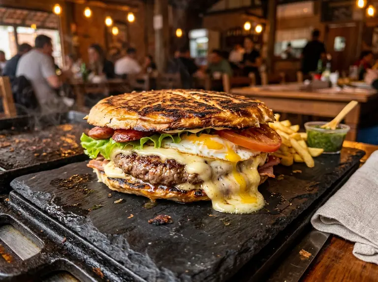
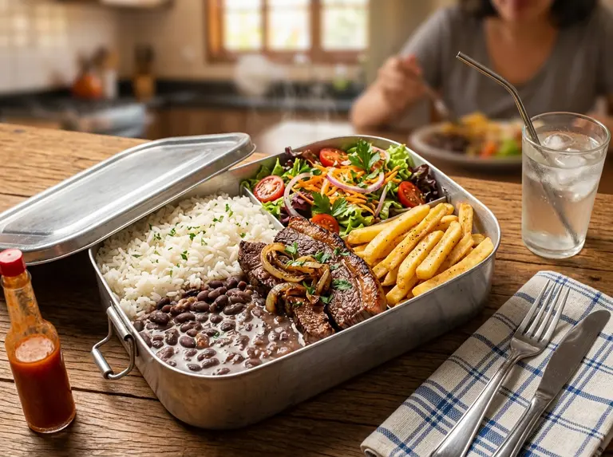

Xis Gaúcho de Verdade e Marmitas com Tempero Caseiro.
Marmitas quentinhas no almoço e lanches gigantes à noite. Sabor autêntico e entrega rápida na sua porta em Santo Antônio de Lisboa.
- ✓ Ingredientes Frescos: Carnes selecionadas e vegetais frescos do dia preparados na hora.
- ✓ Tradição Gaúcha: A autêntica receita do Xis do Rio Grande do Sul agora em Santo Antônio de Lisboa.
- ✓ Custo-Benefício Campeão: Porções generosas que alimentam de verdade por um preço que cabe no bolso.
- ✓ 4.7★ no Google Maps: Avaliação excelente com atendimento humano direto pelo WhatsApp.

A Solução Perfeita para Cada Horário do Seu Dia
Do almoço prático no trabalho ao jantar descontraído com amigos e família em Florianópolis.

Seu Almoço Prático (Marmitas)
Marmitas com tempero caseiro de verdade. Cardápio variado todos os dias para salvar a sua rotina com sabor, nutrição e fartura.
Sua Noite de Sabor (Xis & Porções)
Xis prensado gigante, porções crocantes e o famoso 'morro de batata'. Perfeito para matar a fome sozinho ou dividir com a galera.
Escolha o Seu Prato Favorito
Marmitas Caseiras ao Meio-Dia (Almoço)
Servidas de Segunda a Sábado das 11h às 14h
Arroz, feijão caseiro, salada fresca, farofa e opção de proteína do dia (carne/frango).
Marmita completa reforçada com porção generosa e acompanhamentos caseiros.
Marmita gigante fartíssima com dupla opção de proteína e acompanhamentos completos.
Maionese, ketchup, mostarda, milho, ervilha, mussarela derretida, hambúrguer artesanal e ovo.
Maionese, ketchup, mostarda, milho, ervilha, mussarela, bacon crocante em dobro e hambúrguer.
Maionese, ketchup, mostarda, milho, ervilha, mussarela, calabresa fatiada e hambúrguer.
Maionese, ketchup, mostarda, milho, ervilha, mussarela e frango desfiado suculento bem temperado.
Maionese, ketchup, mostarda, milho, ervilha, batata palha e strogonoff caseiro (carne ou frango).
Maionese, ketchup, mostarda, milho, ervilha, tomate, hambúrguer e coração de frango grelhado.
Maionese, ketchup, mostarda, milho, ervilha, mussarela derretida, hambúrguer e ovo duplo na chapa.
O mais completo! Hambúrguer, bacon, calabresa, frango desfiado, ovo, mussarela, milho e ervilha.
🥟 Pastéis Caseiros Crocantes
Massa de pastel caseira crocante recheada com frango desfiado ou carne moída temperada.
Massa caseira bem recheada com mussarela derretida e douradinha.
Presunto fatiado, queijo mussarela derretido, tomate fresco e toque de orégano.
Calabresa moída temperada acompanhada de muita mussarela derretida.
🍟 Porções Reforçadas & Petiscos
Batata frita crocante e dourada servida bem quentinha com sal na medida certa.
Porção de batata frita coberta com molho de queijo cremoso e bacon crocante.
Porção gigante de batata frita, mussarela derretida, calabresa fatiada e bacon crocante!
Qualidade e Tradição que Você Sente na Primeira Mordida
Ingredientes Frescos
Carnes selecionadas, queijo de verdade e vegetais frescos do dia cortados na hora.
Tradição Gaúcha
A autêntica receita do Xis do Rio Grande do Sul: prensado, generoso e com recheio até a borda.
Custo-Benefício Campeão
Porções generosas que alimentam de verdade por um preço justo e sem surpresas.
Quem Prova, Vira Fã!
Confiança e sabor autêntico comprovados por moradores e turistas de Florianópolis.
"O melhor Xis da região! O atendimento é impecável e o lanche chega super rápido e quentinho."
"A marmita do almoço salvou meu home office. Comida caseira de verdade, com gosto de feita na hora."
Como Chegar & Localização Real
Caminho dos Açores, 2214 - Santo Antônio de Lisboa, Florianópolis - SC
Perguntas Frequentes
Quais as formas de pagamento aceitas?
Aceitamos Pix (chave no WhatsApp), cartões de crédito/débito e dinheiro na entrega ou retirada.
Vocês entregam na minha região?
Entregamos em Santo Antônio de Lisboa, Cacupé, Sambaqui e bairros próximos (consulte taxa de entrega no WhatsApp).
Qual o horário das marmitas e dos lanches?
Almoço: 11h às 14h (Segunda a Sábado). Noite (Xis e Porções): 18h às 22h (Quarta a Segunda • Terça à noite: Fechado).
Bateu aquela fome? Peça Agora!
Atendimento rápido direto no WhatsApp. Preparado na hora com tempero caseiro inesquecível.
🚀 ENVIAR PEDIDO NO WHATSAPP (48) 98804-8681Você é Empreendedor ou Comerciante em Florianópolis?
Gostou da velocidade instantânea e do design deste site? Ganhe 20% DE DESCONTO EXCLUSIVO no desenvolvimento da página profissional do seu negócio com a DIGITALMAS.PRO usando o cupom de indicação: